Flagship canvas
Good Tidings
An ensemble-driven visual identity that layers sacred symbolism, graphite portraiture, and theatrical framing into a collectible cinematic mythos.
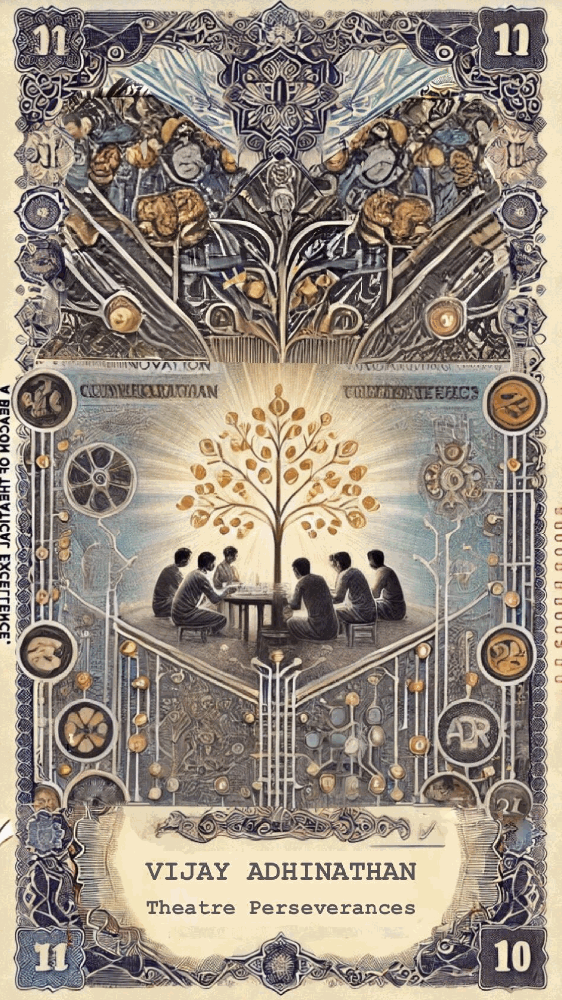
Film Art Director Portfolio
Vijay Adhinathan builds cinematic environments with a theatre-maker’s patience, a painter’s eye for texture, and a storyteller’s instinct for emotional space.
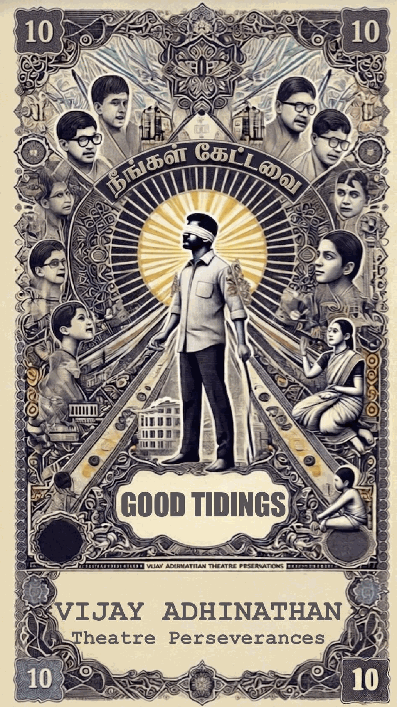
About the vision
From ceremonial stillness to charged family interiors, each frame is treated as an emotional architecture. The work draws from memory, folklore, urban texture, and performance energy to create spaces that actors can inhabit truthfully.
This portfolio language is inspired by the visual system of Good Tidings—a world of ornate borders, character emblems, and bold iconography translated into a refined digital showcase.
Featured work
A curated glimpse into mood, persona, and world-building inspired by the supplied cast and crew material.
Flagship canvas
An ensemble-driven visual identity that layers sacred symbolism, graphite portraiture, and theatrical framing into a collectible cinematic mythos.

Character axis
A central figure designed with duality, authority, and mythic framing—connecting realism, symbolism, and narrative tension.
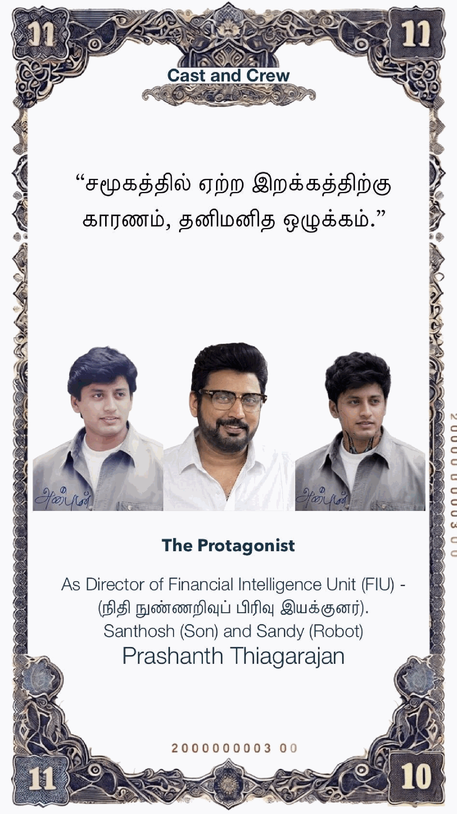
Atmosphere study
Neon arcs, machine anatomy, and devotional stillness combine into a futuristic tableau that balances technology with transcendence.
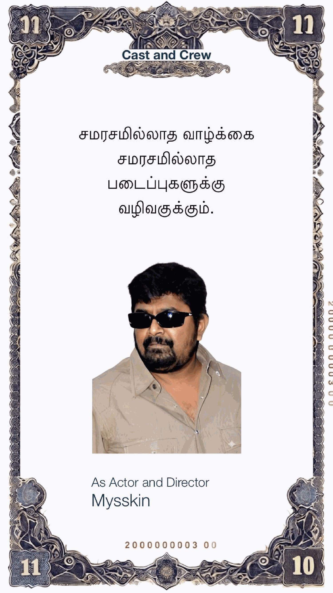
Image gallery
A broader visual archive for producers, directors, and collaborators who want to scan character treatments, portrait studies, and mood-led compositions at a glance.
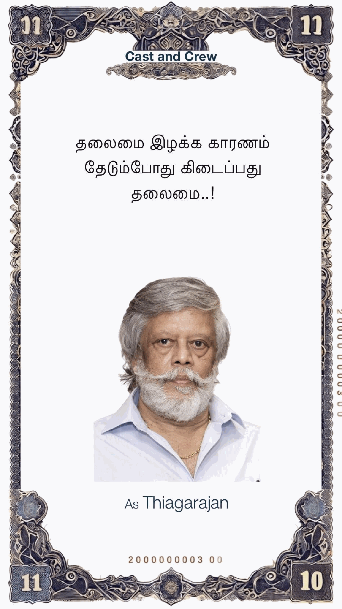
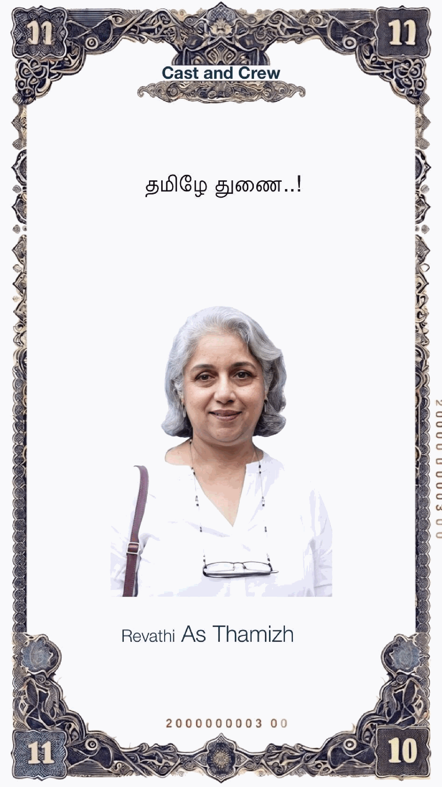
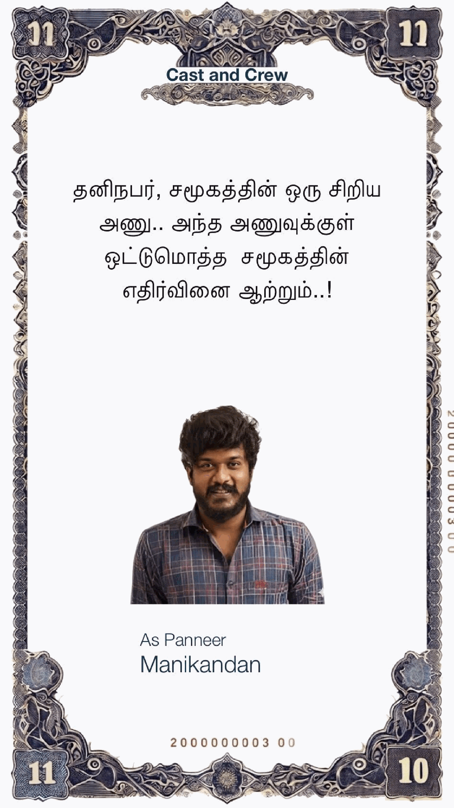
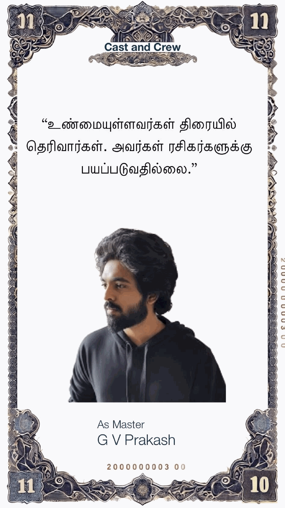
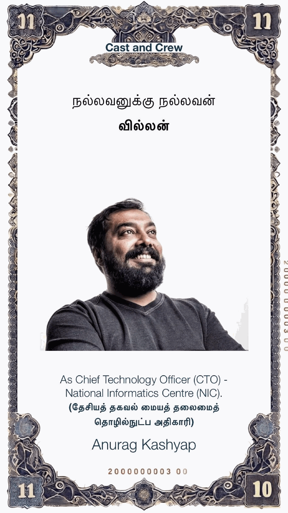
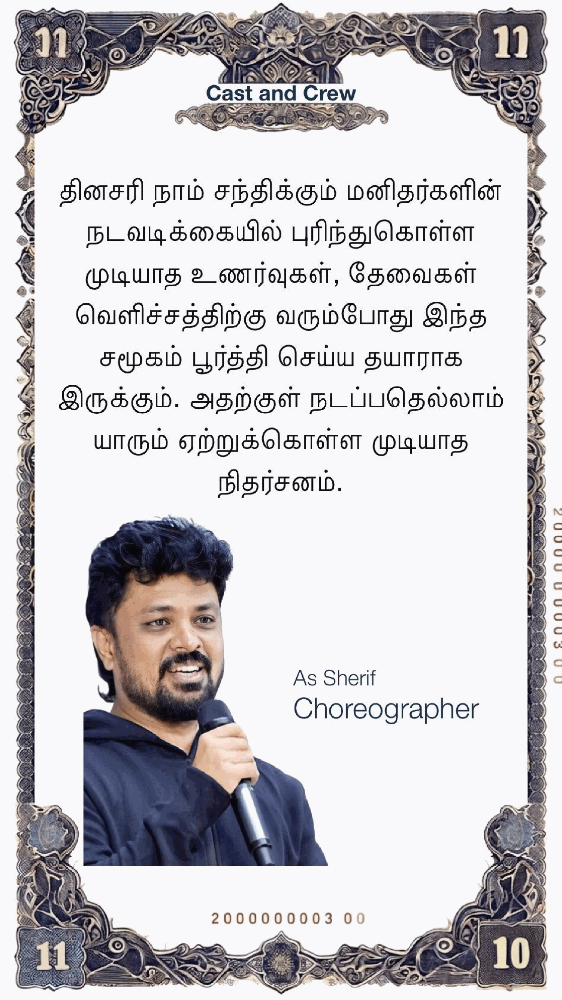
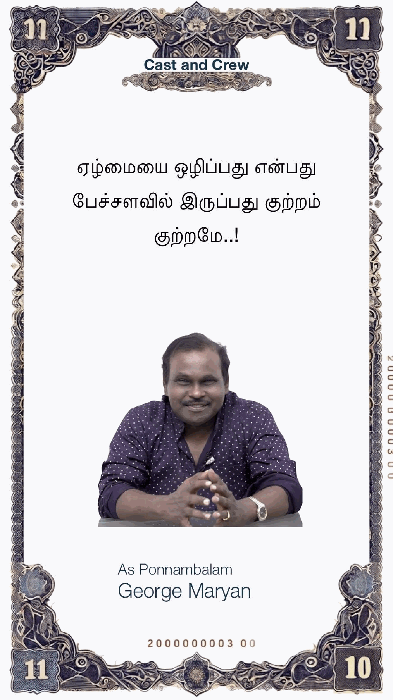
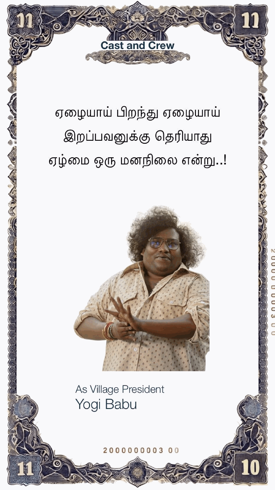
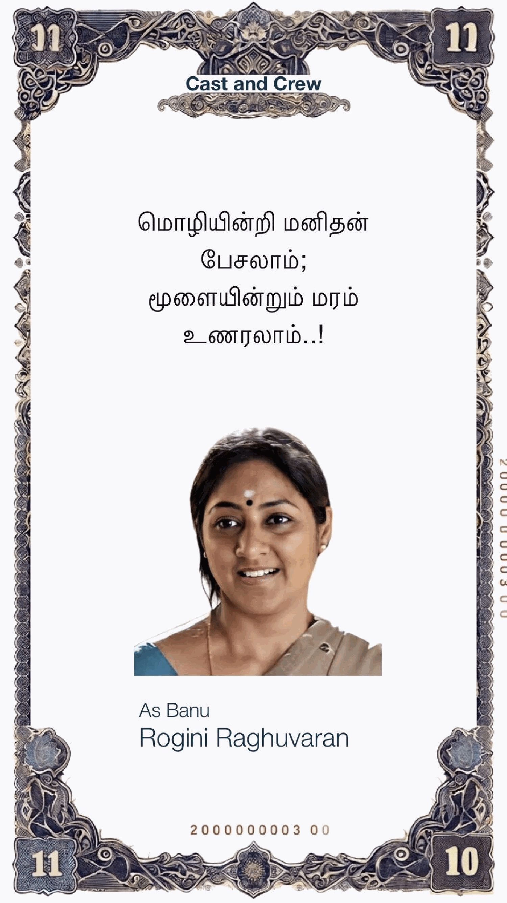
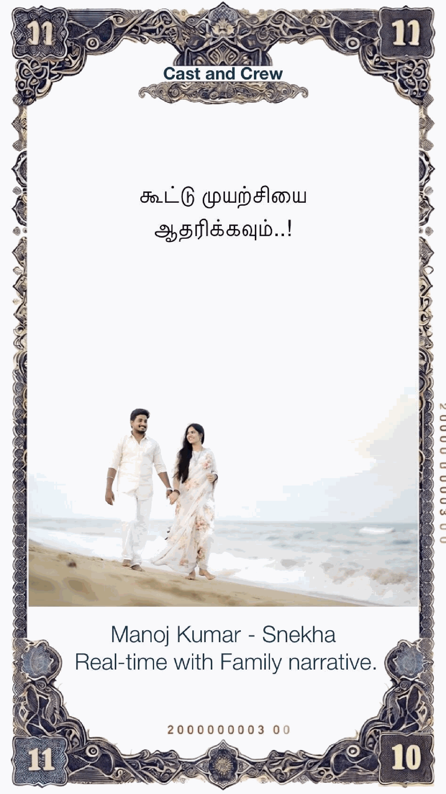
Video showcase
This section is structured to host multiple motion assets—director reels, scene design walkthroughs, production diaries, and project teasers—as the portfolio grows.
Featured reel
A premium slot for the main portfolio reel that introduces visual range, scale, and authorship.
Mood film
A dedicated area for design explorations, concept transitions, and visual language breakdowns.
Behind the scenes
A ready-made layout for BTS clips, frame studies, and scene-building commentary.
Process
Before surfaces and props, the emotional weather of the story is defined through references, memories, and tonal contrasts.
Borders, materials, color temperatures, and recurring icons are selected to give the film a recognizable visual signature.
Spaces are finished with use, wear, light direction, and human detail so performance and design support each other naturally.
Selected collaborators
Ensemble voices from the supplied cast and crew deck, presented as part of the wider cinematic ecosystem.
Protagonist framing rooted in intensity, duality, and institutional presence.
A quiet emotional anchor bringing grace, restraint, and emotional gravity.
Performance energy that sharpens the mood and rhythmic identity of the world.
Presence that introduces scale, provocation, and contemporary cinematic edge.
An auteur silhouette that deepens atmosphere and sharpens visual intrigue.
Character contrast that adds humanity, timing, and tonal flexibility.
“Art direction is not decoration. It is the unseen pulse that teaches every frame how to breathe.”
Contact
Available for feature films, title design systems, concept development, and immersive visual direction for story-first productions.
hello@vijayadhinathan.com